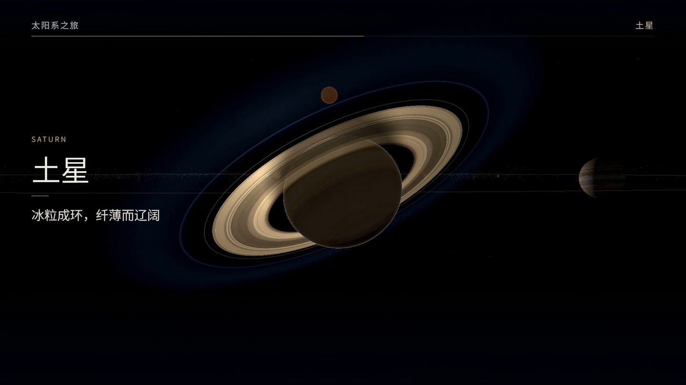
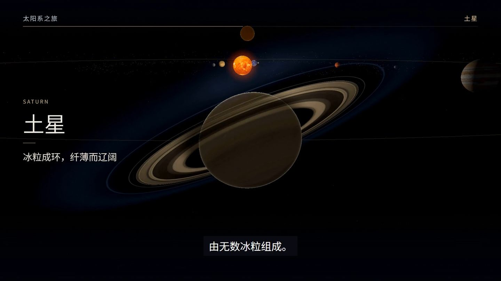
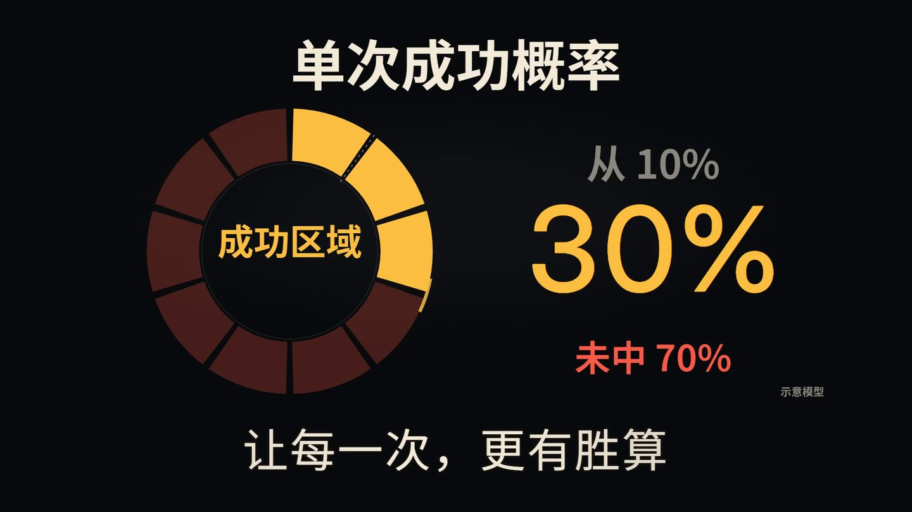
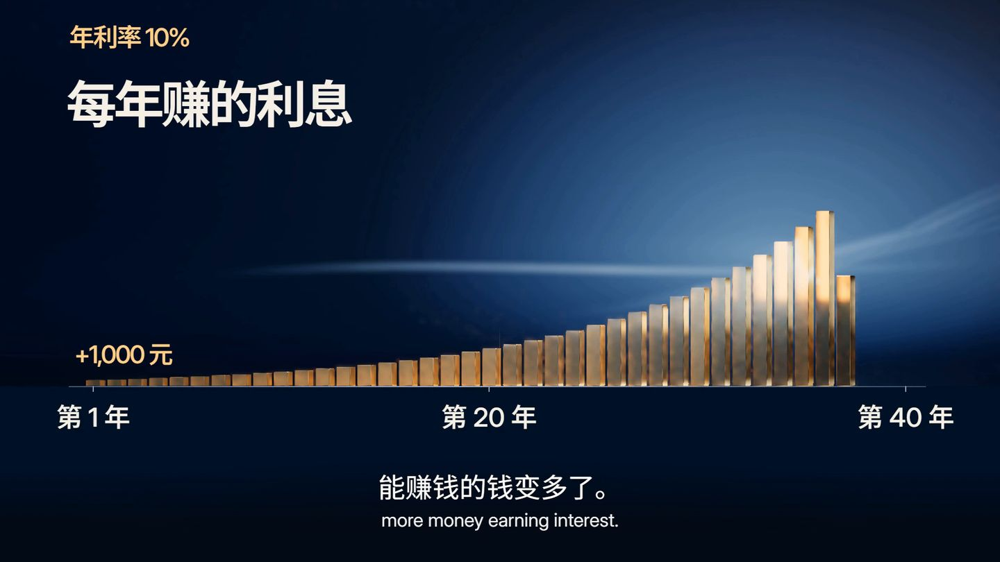

三维空间 120 秒
看地月同框、土星环显形，以及从奥尔特云回望太阳。

原理隐喻 41 秒
看概率盘的金色扇区从 10% 扩到 30%，再用三根柱比较预期成功次数。

数据演化 38.7 秒
看四十根利息柱从同一条零线长出，最后归成前后两座二十年的塔。
纪实素材剪辑 30 秒
从馆藏电报纸带切入，看真实档案怎样串起十项科技里程碑。
数据演化 107.13 秒（完整编排）
看苹果与微软怎样在同一竖屏舞台上交接榜首。